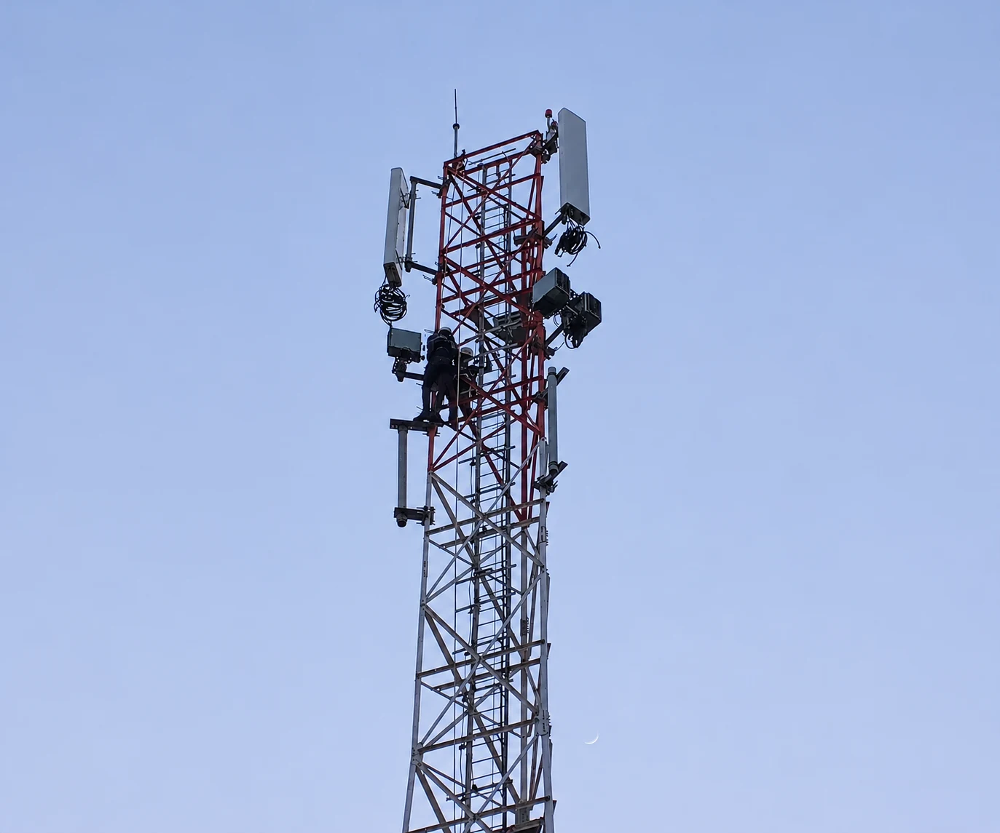

Every connection.
A considered solution.
Explore the capabilities that bring your telecommunications infrastructure requirements together.
From the first plan
to the next connection.
Tell us about your project. We’ll work with you to define the services and technical scope it needs.

01Site installation & infrastructure
The foundation of every connection. Practical site deployment and infrastructure support, bringing together the physical systems that telecommunications networks depend on.
Explore this service 02Radio & transmission
Installation and integration support for radio equipment, antennas and microwave links that connect network sites.
Explore this service 03Fibre optic connectivity
Fibre optic installation and connectivity support for the physical links behind modern communications.
Explore this service 04Maintenance & technical support
Hands-on technical assistance, equipment checks and maintenance support for telecommunications infrastructure.
Explore this service 05Enterprise solutions
A joined-up approach to business connectivity and telecommunications infrastructure requirements.
Explore this service 06Energy & supporting infrastructure
Technical coordination for the power and supporting infrastructure involved in telecommunications sites.
Explore this service 07Projects & technical consulting
Technical planning and project coordination that bring practical field insight into your next deployment.
Explore this service 08Site construction
Telecommunications site construction and preparation for new network infrastructure.
Explore this service 09Microwave installation
Installation of microwave dishes and related transmission equipment for links between sites.
Explore this service 10Site surveys
Field surveys to document site conditions, access and installation requirements.
Explore this service 11Site acquisition
Site acquisition support for telecommunications deployments, from evaluating candidate locations to coordinating next steps.
Explore this service 12Radio access network installation
Installation of radio access network (RAN) equipment for new sites and upgrades, including antenna and radio equipment swaps.
Explore this service 13Site colocation
Site colocation work to support new equipment installations on existing telecommunications infrastructure.
Explore this service 14Drive testing
Mobile network drive testing to collect field measurements and assess coverage and service quality.
Explore this serviceSpecific deliverables, equipment requirements, locations and response arrangements are agreed for each project.
More than a signal.
A connected system.
Sites, transmission, fibre and technical support work together. We bring a practical understanding of how those connections meet in the field.
Let's build what’s next.
Tell us what you're planning. Let’s find the right way forward.